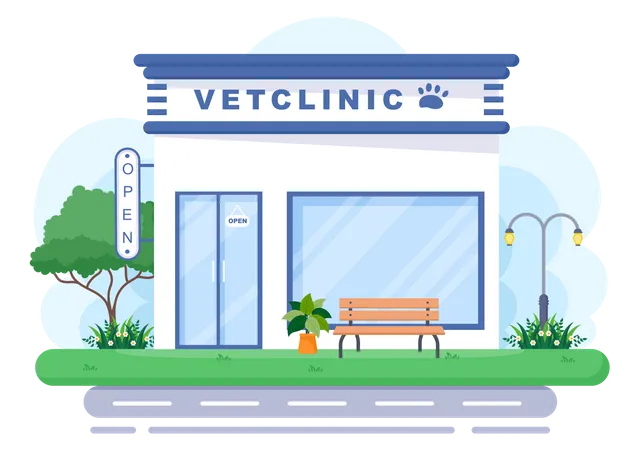

Добре дошли в сайта на Ветеринарна клиника "Най-добър приятел"
Тук ще намерите повече информация за нас, за манипулациите, които предлагаме и нашите контакти. Също така ще откриете и нашия онлайн магазин.
За нас
Проектът "Най-добър приятел" стартира през октомври 2007 година с построяването на ветеринарна амбулатория в гр.Козлодуй, която в последствие е разширена и развита като специализирана клиника за домашни любимци. Екипът на „Най-добър приятел“ се състои от специалисти с дългогодишна практика, членове на професионалните асоциации по ортопедия и травматология, кардиология, дерматология, както и от млади амбициозни ветеринарни лекари, и обучени асистенти.
Д-р Маргарита Илиева
Д-р Ивайло Василев
Д-р Йосиф Еленков
Профилактична дейност
Здравето на домашните любимци, както и нашето, зависи от редовната и качествена профилактика на редица заболявания. Във ветеринарната клиника Най-добър приятел се извършват всички необходими профилактични мероприятия, като за това се използват висококачествени ветеринарномедицински продукти на водещи световни фирми.
Образна диагностика
Ветеринарната клиника Най-добър приятела разполага с рентгенов кабинет за графия на дребни животни. Рентгеновата снимка отнема няколко секунди, а софтуерната обработка улеснява поставянето на точна диагноза.
- Ултразвуковата диагностика е рутинна ежедневанта практика. За целта всички лекари са квалифицирани да извършват ехографски преглед и свързаните с него диагностични манипулации.
- Ендоскопията, като минимално инвазивен метод за изследване на телесни кухини и кухи органи допълваме нашите възможности за образна диагностика. В редица случаи с нея се постига и пълен терапевтичен ефект – отстраняване на чужди тела от хранопровод, стомах, носна кухина; дилатиране стриктури на хранопровода.
Клинична лаборатория
Бързата и точна диагностика на заболяванията е основна предпоставка за успешното им лечение. В създадената от нас лаборатория се извършват редица общи и специфични изследвания:
- Пълна кръвна картина и морфология
- Биохимичен кръвен анализ
- Хормонален анализ
- Биохимично и микроскопско изследване на урина
- Дерматологични изследвания (кожна цитология, посявка за дерматофити)
- Бързи серологични тестове за инфекциозни и паразитни заболявания
Кардиология
Заболяванията на сърцето заемат не малка част от патологиите при домашните любимци. В клиника Най-добър приятел предлагаме на клиентите си и техните любимци адекватна и професионална диагностика. За това разчитаме не само на непрекъснатото обучение и повишаване на квалификацията на лекарите, но и на съвременното оборудване.
- Дигитална Рентгенография, позволяваща получаване на висококачествен образ за секунди
- Доплеров (цветен) ехограф – снабден със специална сонда за ехокардиография, за извършване на детайлно ултразвуково изследване на сърцето
- ЕКГ апарат – за извършване на електрокардиограма
- Пълен набор от серологични и кръвни тестове за Дирофилариоза (Сърдечни червеи), както и изготвяне на индивидуални схеми за лечение
Хирургия / Ортопедия
Хирургичното отделение на ветеринарната клиника Най-добър приятел се състои от предоперационна, операционна и стационар за следхирургичен престой и наблюдение. Оперативното лечение на домашните любимци отговаря на съвременните стандарти за висок професионализъм. Това сме постигнали благодарение на модерното медицинското оборудване и на отлично подготвения екип от ветеринарни лекари.
Добре дошли в онлайн магазина на клиниката
Изберете категория:
Контакти
Адрес: гр. Козлодуй, ул. "Ветеринарна" 21
Телефон: 0888 888 888
Email: bestFriends@vetclinic.com
Работно време
Понеделник - петък: 10:00 - 18:00 часа
Събота: 10:00 - 14:00 часа
Неделя - почивен ден